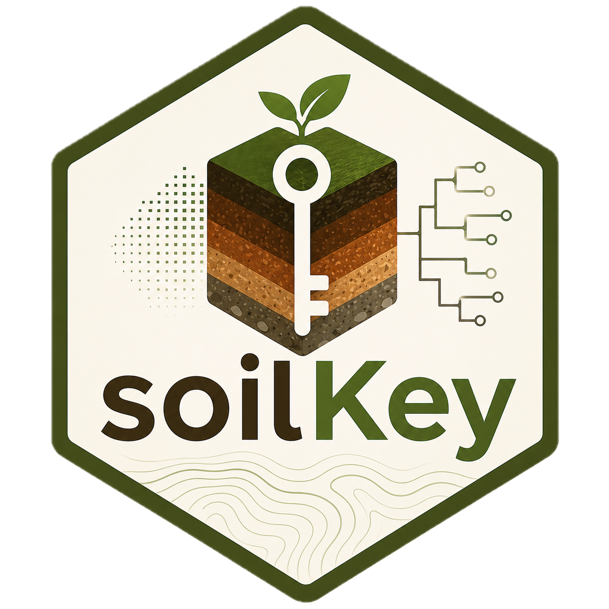

Getting started with soilKey
Source:vignettes/v01_getting_started.Rmd
v01_getting_started.RmdsoilKey provides automated soil profile classification
under WRB 2022 (4th edition), SiBCS 5ª ed. (2018), and USDA Soil
Taxonomy (13th edition, 2022). The taxonomic key itself is implemented
as deterministic R code driven by versioned YAML rules; vision-language
extraction, spatial priors, and OSSL-based attribute prediction sit
alongside it as modular layers, never inside it.
0. The 30-second on-ramp
If you just want to see soilKey work end-to-end on a real profile – without writing any R code – there are two paths.
A. Zero-code GUI
Pick one of 31 canonical profiles from the dropdown (or upload your own horizons CSV), click Classify, and read the WRB / SiBCS / USDA names plus the deterministic key trace and the evidence grade.
B. One R call, one fixture
library(soilKey)
#>
#> Attaching package: 'soilKey'
#> The following object is masked from 'package:base':
#>
#> %||%
pedon <- make_ferralsol_canonical() # canonical Latossolo Vermelho
classify_wrb2022(pedon, on_missing = "silent")$name
#> [1] "Geric Ferric Rhodic Chromic Ferralsol (Clayic, Humic, Dystric, Ochric, Rubic)"
classify_sibcs(pedon)$name
#> [1] "Latossolos Vermelhos Distroficos tipicos"
classify_usda(pedon, on_missing = "silent")$name
#> [1] "Rhodic Hapludox"That is the whole package: PedonRecord in,
classification out. The remaining sections walk through how to build
your own pedon and how the side modules (VLM, spatial, spectral) fit
together.
1. Building a PedonRecord from scratch
PedonRecord is the central data carrier. It bundles site
metadata, the horizons table (with a fixed canonical schema – see
horizon_column_spec() for the full list of columns), and
optional spectra, images, documents, and a per-attribute provenance
log.
my_pedon <- PedonRecord$new(
site = list(
id = "example-001",
lat = -22.5,
lon = -43.7,
country = "BR",
parent_material = "gneiss"
),
horizons = data.frame(
top_cm = c(0, 15, 65, 130),
bottom_cm = c(15, 65, 130, 200),
designation = c("A", "Bw1", "Bw2", "C"),
clay_pct = c(50, 60, 65, 60),
silt_pct = c(15, 10, 8, 8),
sand_pct = c(35, 30, 27, 32),
cec_cmol = c(8, 5, 4.5, 4),
bs_pct = c(20, 12, 10, 11),
ph_h2o = c(4.8, 4.9, 5.0, 5.1),
oc_pct = c(2.0, 0.4, 0.2, 0.1)
)
)
my_pedon$validate()
#> ✔ PedonRecord validates: 4 horizons OKThe validator catches inverted depths, texture sums far from 100, implausible pH, sum of bases above CEC, Munsell out-of-range, and a handful of other soil-physical sanity checks.
2. Canonical fixtures
soilKey ships sixteen canonical fixtures designed so
that exactly one of the eleven v0.2 diagnostics passes on each. Each
profile also classifies cleanly through the wired WRB key.
fixtures <- list(
Ferralsol = make_ferralsol_canonical(),
Luvisol = make_luvisol_canonical(),
Acrisol = make_acrisol_canonical(),
Lixisol = make_lixisol_canonical(),
Alisol = make_alisol_canonical(),
Chernozem = make_chernozem_canonical(),
Kastanozem = make_kastanozem_canonical(),
Phaeozem = make_phaeozem_canonical(),
Calcisol = make_calcisol_canonical(),
Gypsisol = make_gypsisol_canonical(),
Solonchak = make_solonchak_canonical(),
Cambisol = make_cambisol_canonical(),
Plinthosol = make_plinthosol_canonical(),
Podzol = make_podzol_canonical(),
Gleysol = make_gleysol_canonical(),
Vertisol = make_vertisol_canonical()
)
ferralsol <- fixtures$Ferralsol
ferralsol
#>
#> ── PedonRecord ──
#>
#> Site: id=FR-canonical-01 | (-22.5000, -43.7000) | BR | 2024-03-10 | on gneiss
#> Horizons (5):
#> 1) A 0-15 cm clay=50.0 silt=15.0 sand=35.0 CEC=8.0 pH=4.8 OC=2.0
#> 2) AB 15-35 cm clay=52.0 silt=14.0 sand=34.0 CEC=6.5 pH=4.7 OC=1.2
#> 3) BA 35-65 cm clay=55.0 silt=10.0 sand=35.0 CEC=5.5 pH=4.7 OC=0.6
#> 4) Bw1 65-130 cm clay=60.0 silt=8.0 sand=32.0 CEC=5.0 pH=4.8 OC=0.3
#> 5) Bw2 130-200 cm clay=60.0 silt=8.0 sand=32.0 CEC=4.8 pH=4.9 OC=0.23. Calling the diagnostics directly
Every diagnostic returns a DiagnosticResult carrying the
per-sub-test evidence, missing-attribute report, layer indices that
satisfied, and the WRB literature reference.
ferralic(ferralsol)
#>
#> ── DiagnosticResult: ferralic
#> Status: PASSED
#> Layers satisfying: 3, 4, 5
#> Sub-tests:
#> [PASS] texture
#> [PASS] cec_per_clay
#> [PASS] thickness
#> Reference: IUSS Working Group WRB (2022), Chapter 3.1.10, Ferralic horizon (p.
#> 44)
#> Notes: v0.3.1: ECEC/clay <= 12 test removed; not part of WRB 2022 ferralic
#> definition4. Diagnostic matrix across the canonical fixtures
diagnostics <- c("argic", "ferralic", "mollic", "calcic", "gypsic", "salic",
"cambic", "plinthic", "spodic",
"gleyic_properties", "vertic_properties")
mat <- vapply(fixtures, function(p) {
vapply(diagnostics, function(d) {
fn <- get(d, envir = asNamespace("soilKey"))
isTRUE(fn(p)$passed)
}, logical(1))
}, logical(length(diagnostics)))
knitr::kable(t(mat))| argic | ferralic | mollic | calcic | gypsic | salic | cambic | plinthic | spodic | gleyic_properties | vertic_properties | |
|---|---|---|---|---|---|---|---|---|---|---|---|
| Ferralsol | FALSE | TRUE | FALSE | FALSE | FALSE | FALSE | FALSE | FALSE | FALSE | FALSE | FALSE |
| Luvisol | TRUE | FALSE | FALSE | FALSE | FALSE | FALSE | FALSE | FALSE | FALSE | FALSE | FALSE |
| Acrisol | TRUE | FALSE | FALSE | FALSE | FALSE | FALSE | FALSE | FALSE | FALSE | FALSE | FALSE |
| Lixisol | TRUE | FALSE | FALSE | FALSE | FALSE | FALSE | FALSE | FALSE | FALSE | FALSE | FALSE |
| Alisol | TRUE | FALSE | FALSE | FALSE | FALSE | FALSE | FALSE | FALSE | FALSE | FALSE | FALSE |
| Chernozem | FALSE | FALSE | TRUE | FALSE | FALSE | FALSE | TRUE | FALSE | FALSE | FALSE | FALSE |
| Kastanozem | FALSE | FALSE | TRUE | FALSE | FALSE | FALSE | TRUE | FALSE | FALSE | FALSE | FALSE |
| Phaeozem | FALSE | FALSE | TRUE | FALSE | FALSE | FALSE | TRUE | FALSE | FALSE | FALSE | FALSE |
| Calcisol | FALSE | FALSE | FALSE | TRUE | FALSE | FALSE | TRUE | FALSE | FALSE | FALSE | FALSE |
| Gypsisol | FALSE | FALSE | FALSE | FALSE | TRUE | FALSE | TRUE | FALSE | FALSE | FALSE | FALSE |
| Solonchak | FALSE | FALSE | FALSE | FALSE | FALSE | TRUE | TRUE | FALSE | FALSE | FALSE | FALSE |
| Cambisol | FALSE | FALSE | FALSE | FALSE | FALSE | FALSE | TRUE | FALSE | FALSE | FALSE | FALSE |
| Plinthosol | FALSE | FALSE | FALSE | FALSE | FALSE | FALSE | TRUE | TRUE | FALSE | FALSE | FALSE |
| Podzol | FALSE | FALSE | FALSE | FALSE | FALSE | FALSE | FALSE | FALSE | TRUE | FALSE | FALSE |
| Gleysol | FALSE | FALSE | FALSE | FALSE | FALSE | FALSE | TRUE | FALSE | FALSE | TRUE | FALSE |
| Vertisol | FALSE | FALSE | FALSE | FALSE | FALSE | FALSE | TRUE | FALSE | FALSE | FALSE | TRUE |
Every fixture activates exactly one diagnostic (or, for the
argic-derived RSGs Acrisol / Lixisol / Alisol / Luvisol, just the shared
argic).
5. RSG-derived diagnostics: argic and mollic families
The argic horizon is shared by four RSGs – Acrisols, Lixisols,
Alisols, Luvisols – which differ by clay activity (CEC per kg clay) and
chemistry (BS or Al saturation). soilKey provides one diagnostic per RSG
that runs argic() internally, then applies the activity and
chemistry tests on the argic layer:
acrisol(make_acrisol_canonical())$passed
#> [1] TRUE
lixisol(make_lixisol_canonical())$passed
#> [1] TRUE
alisol (make_alisol_canonical())$passed
#> [1] TRUE
luvisol(make_luvisol_canonical())$passed
#> [1] TRUESame pattern for the mollic-derived family (Chernozems / Kastanozems / Phaeozems):
chernozem (make_chernozem_canonical())$passed
#> [1] TRUE
kastanozem(make_kastanozem_canonical())$passed
#> [1] TRUE
phaeozem (make_phaeozem_canonical())$passed
#> [1] TRUE6. End-to-end WRB classification
classify_wrb2022() consumes a PedonRecord
and runs it through the YAML key
(inst/rules/wrb2022/key.yaml). v0.2 wires 16 of 32 RSGs
end-to-end; the other 16 are stubbed with
not_implemented_v01: markers and return NA in the
trace.
classify_wrb2022(ferralsol)
#>
#> ── ClassificationResult (WRB 2022) ──
#>
#> Name: Geric Ferric Rhodic Chromic Ferralsol (Clayic, Humic, Dystric, Ochric,
#> Rubic)
#> RSG/Order: Ferralsols
#> Qualifiers: Geric, Ferric, Rhodic, Chromic, Clayic, Humic, Dystric, Ochric,
#> Rubic, FALSE, FALSE, FALSE, FALSE, TRUE, FALSE, FALSE, FALSE, FALSE, FALSE,
#> al_ox_pct, fe_ox_pct, phosphate_retention_pct, volcanic_glass_pct, FALSE,
#> volcanic_glass_pct, FALSE, FALSE, plinthite_pct, FALSE, plinthite_pct, FALSE,
#> plinthite_pct, FALSE, FALSE, TRUE, TRUE, TRUE, FALSE, FALSE,
#> redoximorphic_features_pct, FALSE, redoximorphic_features_pct, FALSE, FALSE,
#> p_mehlich3_mg_kg, FALSE, p_mehlich3_mg_kg, FALSE, FALSE, FALSE, FALSE, FALSE,
#> FALSE, TRUE, FALSE, FALSE, TRUE, TRUE, FALSE, FALSE, FALSE, FALSE, TRUE, FALSE,
#> TRUE, FALSE
#> Evidence grade: A
#>
#> ── Ambiguities
#> - TC: Indeterminate -- missing 3 attribute(s): artefacts_pct,
#> geomembrane_present, technic_hardmaterial_pct
#> - CR: Indeterminate -- missing 1 attribute(s): permafrost_temp_C
#> - VR: Indeterminate -- missing 1 attribute(s): slickensides
#> - SC: Indeterminate -- missing 1 attribute(s): ec_dS_m
#> - AN: Indeterminate -- missing 4 attribute(s): al_ox_pct, fe_ox_pct,
#> phosphate_retention_pct, volcanic_glass_pct
#> - PZ: Indeterminate -- missing 2 attribute(s): al_ox_pct, fe_ox_pct
#> - PT: Indeterminate -- missing 1 attribute(s): plinthite_pct
#> - ST: Indeterminate -- missing 1 attribute(s): redoximorphic_features_pct
#>
#> ── Missing data that would refine result
#> artefacts_pct, geomembrane_present, technic_hardmaterial_pct,
#> permafrost_temp_C, slickensides, ec_dS_m, redoximorphic_features_pct,
#> al_ox_pct, fe_ox_pct, phosphate_retention_pct, volcanic_glass_pct,
#> plinthite_pct
#>
#> ── Warnings
#> ! 12 distinct attribute(s) missing across the key trace -- see $missing_data
#>
#> ── Key trace
#> (16 RSGs tested before assignment)
#> 1. HS Histosols -- failed
#> 2. AT Anthrosols -- failed
#> 3. TC Technosols -- NA (3 attrs missing)
#> 4. CR Cryosols -- NA (1 attrs missing)
#> 5. LP Leptosols -- failed
#> 6. SN Solonetz -- failed
#> 7. VR Vertisols -- NA (1 attrs missing)
#> 8. SC Solonchaks -- NA (1 attrs missing)
#> 9. GL Gleysols -- failed (1 attrs missing)
#> 10. AN Andosols -- NA (4 attrs missing)
#> 11. PZ Podzols -- NA (2 attrs missing)
#> 12. PT Plinthosols -- NA (1 attrs missing)
#> 13. PL Planosols -- failed
#> 14. ST Stagnosols -- NA (1 attrs missing)
#> 15. NT Nitisols -- failed
#> 16. FR Ferralsols -- PASSED
classifications <- vapply(fixtures, function(p) {
classify_wrb2022(p, on_missing = "silent")$rsg_or_order
}, character(1))
data.frame(fixture = names(classifications), assigned_rsg = classifications)
#> fixture assigned_rsg
#> Ferralsol Ferralsol Ferralsols
#> Luvisol Luvisol Luvisols
#> Acrisol Acrisol Acrisols
#> Lixisol Lixisol Lixisols
#> Alisol Alisol Alisols
#> Chernozem Chernozem Chernozems
#> Kastanozem Kastanozem Kastanozems
#> Phaeozem Phaeozem Phaeozems
#> Calcisol Calcisol Calcisols
#> Gypsisol Gypsisol Gypsisols
#> Solonchak Solonchak Solonchaks
#> Cambisol Cambisol Cambisols
#> Plinthosol Plinthosol Plinthosols
#> Podzol Podzol Podzols
#> Gleysol Gleysol Gleysols
#> Vertisol Vertisol VertisolsEach canonical fixture maps to its intended RSG. The trace shows which RSGs were tested, in canonical key order, before the assigned one.
7. Provenance and evidence grade
PedonRecord$add_measurement() records a value’s
provenance in a structured log. The final
ClassificationResult$evidence_grade summarises that log on
an A–D scale: A means every recorded value was laboratory-measured, D
means the result rests on attributes extracted by VLM or assumed by the
user.
ferralsol_v <- make_ferralsol_canonical()
# Mark the Bw1 clay value as predicted from spectroscopy
ferralsol_v$add_measurement(
horizon_idx = 4,
attribute = "clay_pct",
value = 60,
source = "predicted_spectra",
confidence = 0.85,
overwrite = TRUE
)
classify_wrb2022(ferralsol_v)$evidence_grade
#> [1] "B"
ferralsol_w <- make_ferralsol_canonical()
ferralsol_w$add_measurement(1, "clay_pct", 50, "extracted_vlm",
confidence = 0.7, overwrite = TRUE)
classify_wrb2022(ferralsol_w)$evidence_grade
#> [1] "D"8. Interoperability with aqp
PedonRecord$to_aqp() returns an
aqp::SoilProfileCollection, allowing soilKey to plug into
aqp’s plotting and aggregation tooling without owning that
infrastructure:
spc <- ferralsol$to_aqp()
class(spc)
#> [1] "SoilProfileCollection"
#> attr(,"package")
#> [1] "aqp"
aqp::profile_id(spc)
#> [1] "FR-canonical-01"9. Module 4 – OSSL spectroscopy bridge (gap-filling)
When some horizon attributes are missing, but the profile carries
Vis-NIR or MIR spectra, soilKey can fill the gaps via the Open Soil
Spectral Library. The pipeline preprocesses the spectra (SNV / SG1 /
trim), dispatches to a memory-based or PLSR backend, and writes each
prediction into the PedonRecord with provenance
predicted_spectra – which the authority hierarchy treats as
below laboratory-measured but above VLM-extracted values. The PI95
prediction interval is mapped to a [0, 1] confidence score
via pi_to_confidence().
# Synthetic example -- a profile with measured spectra but missing CEC.
pr_spec <- make_synthetic_pedon_with_spectra(n_horizons = 4)
pr_spec$horizons$cec_cmol <- NA_real_ # erase CEC
# Predict via memory-based learning against the OSSL global library.
pr_filled <- fill_from_spectra(
pedon = pr_spec,
backend = "mbl", # or "plsr_local" / "pretrained"
attrs = c("cec_cmol") # which attributes to gap-fill
)
# Each predicted cell is logged with provenance source = "predicted_spectra".
pr_filled$provenance
classify_wrb2022(pr_filled)$evidence_grade # B (predicted_spectra present)10. Module 3 – SoilGrids / Embrapa spatial prior (sanity check)
Once the deterministic key has reached a verdict, soilKey can
cross-check that verdict against a spatial prior
derived from ISRIC SoilGrids (global) or the Embrapa raster (Brazil).
The prior never overrides the key – it only attaches a
prior_check entry to the result and emits a warning if the
deterministic outcome lies in a low-probability region of the prior.
prior <- spatial_prior(lon = -43.7, lat = -22.5, source = "auto")
prior # data.table of (rsg_code, probability)
res <- classify_wrb2022(
pedon = ferralsol,
prior = prior,
prior_threshold = 0.01 # warn if assigned RSG has prior < 1%
)
res$prior_check11. Module 2 – Multimodal extraction via ellmer
A field PDF or photo can be turned into a PedonRecord
via the extract_* functions, each driven by an
ellmer chat object (Anthropic, OpenAI, Google, or Ollama).
The output is a schema-validated JSON (draft-07, in
inst/schemas/) with
{value, confidence, source_quote} per attribute, then
merged into the PedonRecord with provenance
extracted_vlm.
The package ships a MockVLMProvider (R6) so the
validation + retry loop can be exercised in tests without an API
key:
mock <- MockVLMProvider$new(
responses = list(
list(horizons = list(
list(top_cm = 0, bottom_cm = 15, designation = "A",
clay_pct = list(value = 30, confidence = 0.9,
source_quote = "30% clay (table 1)")),
list(top_cm = 15, bottom_cm = 65, designation = "Bw",
clay_pct = list(value = 55, confidence = 0.85,
source_quote = "Bw horizon, 55% clay"))
))
)
)
pr_extracted <- extract_horizons_from_pdf(
pdf_path = "fieldsheet.pdf",
provider = mock # in production: vlm_provider("anthropic")
)
classify_wrb2022(pr_extracted)$evidence_grade # C or D depending on cell coverageFor real use:
chat <- vlm_provider("anthropic", model = "claude-sonnet-4-5")
pr <- extract_horizons_from_pdf("RADAMBRASIL_perfil_007.pdf",
provider = chat)
res <- classify_wrb2022(pr)
res12. SiBCS 5ª edição (Embrapa, 2018)
soilKey ships the parallel SiBCS key alongside WRB 2022. The 13
ordens are wired in canonical Cap 4 order; calling
classify_sibcs() on any PedonRecord runs the
same engine that backs classify_wrb2022().
# A canonical Latossolo (Brazilian Ferralsol equivalent)
pr_lat <- make_latossolo_canonical()
classify_sibcs(pr_lat, on_missing = "silent")$rsg_or_order
#> [1] "Latossolos"
# A canonical Argissolo (B textural, low BS)
pr_arg <- make_argissolo_canonical()
classify_sibcs(pr_arg, on_missing = "silent")$rsg_or_order
#> [1] "Argissolos"
# A canonical Nitossolo (clay >=35% throughout, B/A <=1.5, cerosidade)
pr_nit <- make_nitossolo_canonical()
classify_sibcs(pr_nit, on_missing = "silent")$rsg_or_order
#> [1] "Nitossolos"
# Cross-system: the SAME profile classified by both keys
classify_wrb2022(pr_lat, on_missing = "silent")$rsg_or_order
#> [1] "Ferralsols"
classify_sibcs(pr_lat, on_missing = "silent")$rsg_or_order
#> [1] "Latossolos"The diagnostic helpers also have Portuguese names that match the SiBCS literature. For example:
# Atividade da fração argila (Ta vs Tb) per Cap 1, p 30
atividade_argila_alta(make_luvissolo_canonical())$passed # TRUE -> Ta
#> [1] TRUE
atividade_argila_alta(make_nitossolo_canonical())$passed # FALSE -> Tb
#> [1] FALSE
# Caráter alítico (Cap 1, p 32): Al >= 4 cmol_c/kg + sat Al >= 50% + V < 50%
carater_alitico(make_argissolo_canonical())$passed
#> [1] NA13. v0.7 scope and the v0.3.3+ roadmap
| Version | Scope |
|---|---|
| v0.1 | Core classes; argic, ferralic, mollic; Ferralsols path |
| v0.2 | +calcic, gypsic, salic, cambic, plinthic, spodic, gleyic, vertic; +AC/LX/AL/LV/CH/KS/PH RSG diagnostics; 16/32 wired |
| v0.3 | +histic, leptic, arenic, umbric, duric, technic, andic, fluvic, natric, nitic, planic, stagnic, retic, cryic, anthric; full WRB key (32/32 RSGs wired); 31 canonical fixtures |
| v0.3.1 | Tier-1 corrections vs WRB 2022 Ch 3.1: argic 6/1.4/20 + band 50, ferralic drops ECEC, duric 10/10, vertic >=25 cm, salic alkaline + product gate |
| v0.3.2 | RSG order in key.yaml aligned to canonical WRB 2022 Ch
4 (PL/ST before NT/FR; FL before AR) |
| v0.4 | Module 4 – OSSL spectroscopy bridge (MBL, PLSR-local, pretrained) |
| v0.5 | Module 3 – SoilGrids spatial prior + Embrapa raster (sanity-check, never overrides) |
| v0.6 | Module 2 – Multimodal extraction (PDF / photo / fieldsheet)
via ellmer, schema-validated |
| v0.3.3 | Complete WRB Ch 3.1 / 3.2 / 3.3 coverage – +18 horizons, +12 properties, +16 materials. Schema +24 columns. |
| v0.3.4 | Tier-2 RSG gate strengthening – vertisol, andosol, gleysol, planosol, ferralsol, chernozem_strict, kastanozem_strict wired into key.yaml; spodic refined to disambiguate from andic. |
| v0.3.5 | Closes WRB Ch 3.1 – 32/32 horizons (+tsitelic, panpaic, limonic, protovertic). |
| v0.7 | Module 6 – SiBCS 5ª ed. (Embrapa, 2018) implemented in full: 17 atributos diagnósticos + 24 horizontes diagnósticos + 13 ordens RSG-level following the canonical Cap 4 key (O→R→V→E→S→G→L→M→C→F→T→N→P). 13 fixtures canônicas, all classify correctly; 30 new tests; +830 expectations total in the suite. |
| v0.8 | Module 5 – USDA Soil Taxonomy parallel key (12 orders) |
| v0.9 | All ~202 WRB qualifiers + 10 specifiers; vignettes 05-09; WoSIS benchmark |
| v1.0 | CRAN submission and methodological paper |
See ARCHITECTURE.md (in the package root) for the full
design rationale.